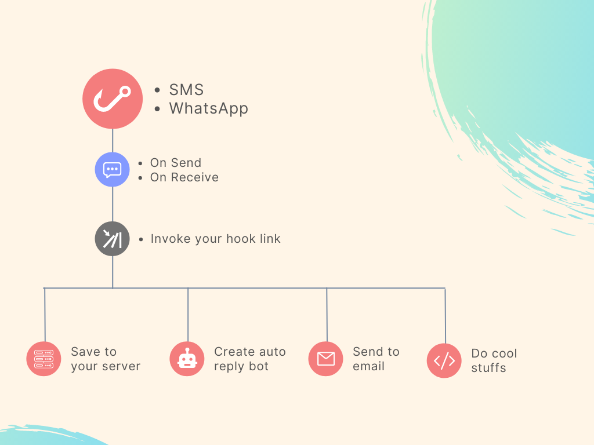
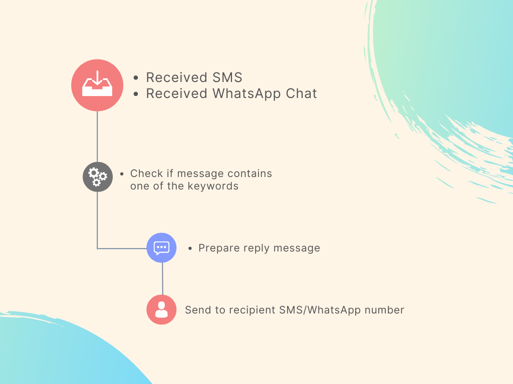

Introduction
Actions are tools that can also help you automate some tasks, like event listeners on send and receive or autoreply to messages directly. These are designed solely for SMS/WhatsApp related tasks.
Types of Actions
- Hooks: These are actions that listen for send/receive events from sms/whatsapp. It's like a webhook but it also allows listening from send events and only use GET method. It also allows you to structure the link yourself.
- Autoreplies: These are actions that automate the task of replying to received messages if a keyword is found in them. You will have to decide on what keywords to use and what reply message you want to send.
Use Cases
- Log the event to your own server if you send or receive a message.
- Call a remote url if you send or receive a message.
- Automatically reply if the received message contains a keyword.
How It Works
In the images below, we explain how the feature works in a simple manner.
-
Hooks

-
Autoreplies

Code Example for Hooks
<?php
// Hooks will always use GET method.
// Assuming that you structured your hook link like this: http://someremoteurl.com/test.php?phone={{phone}}&message={{message}}&time={{date.time}}
// You should be able to parse the variables like this:
$request = $_GET;
echo $request["phone"];
echo $request["message"];
echo $request["time"];
// you can do anything with these variables. save to your database or launch an automated task on your end.